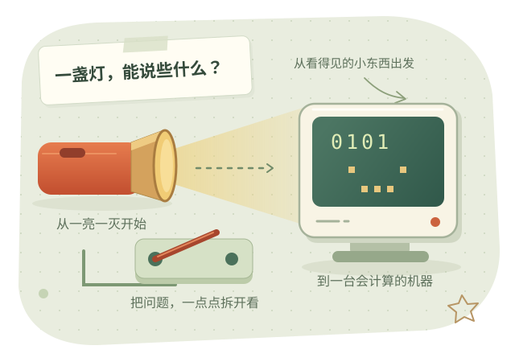

《编码》给孩子 / Code for Kids
已开放一个问题，带出下一个问题
- 1传个消息怎样让远处的朋友知道我的意思？
- 2约好信号只有亮和灭，能表示多少种消息？
- 3连起开关怎样让电路算数，还能记住结果？
- 4写下步骤怎样让机器照着指令，一步步做？
- 5画出世界数字怎样成为文字和图像？
给孩子的知识探索 / JAMLAB FOR KIDS
从一个小问题开始。
猜一猜，动手试，
再把里面的道理找出来。
和大人一起也好，自己慢慢试也好。

一次选一两关，慢慢来。
《编码》给孩子 / Code for Kids
已开放02 我们这样发现
带着一个问题，把自己的办法试出来。
朋友听不到，
怎样传消息？
我想用灯光。
这样能行吗？
你发，我来猜。
哪里弄混了？
规则约好了吗？
消息怎么分开？
换成敲桌子，
办法还管用吗？
能说出为什么，能猜到改变之后会怎样，
也能把办法用到新的问题里，就又往前走了一步。
下一张工作台
桥怎样站稳？声音怎样跑到耳朵里？
把位置留给新的好奇。
03 一起探索
不用急着给出答案。
陪孩子多问一步，
也多试一种办法。
这里把“第一性原理”变成孩子能做的事：先看见、先试验，再从已经知道的事实里，一步步想出解释。
研究自然现象，就一起找证据；设计一种工具，就问清楚要解决什么问题、有什么条件。信号怎样命名、字母怎样编号，则是人们的约定，也可以试着自己设计一套。
请孩子用自己的话、图画或演示来解释。再改一个条件，先猜结果，然后一起验证。
比如用灯传消息后，问：“去掉中间的停顿，还能读懂吗？”“换成敲桌子，这个办法还管用吗？”能找到问题、说明原因、尝试改进，都是理解在发生的证据。
先问：“你看到了什么，让你这样猜？”然后一起试一试。新发现和原来的想法不一样，就一起修改解释。
一次只探索一个小问题也很好。孩子可以回头再玩，不必一次记住全部词语。碰到暂时解释不了的地方，可以一起把问题记下来。
把发现说出来
我发现…… 因为……
如果改成…… 我猜……